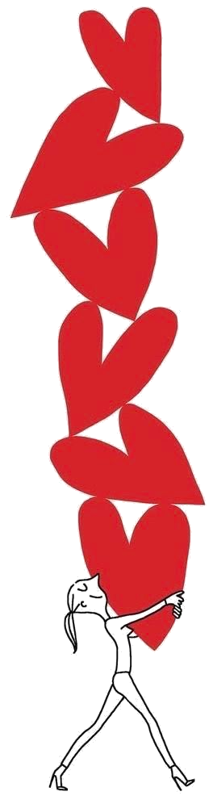

התחנה הזאת לא נועדה להיעשות היום. היא מחכה לכם אחרי השבוע הראשון — זה שבו התברר מה באמת קרה.
הם נופלים בשבוע השני. כשאחד עשה את שלוש הפעולות, והשני לא עשה כלום.
וזה כמעט תמיד קורה. לא כי מישהו לא רוצה, אלא כי לשניים אין את אותו קצב, את אותו לוח, ואת אותה יכולת לזוז בשבוע מסוים.
והמחשבה שמגיעה אז היא תמיד אותה מחשבה: ״אז אני היחיד שמשקיע כאן״.

אני לא הולכת להגיד לכם שהמחשבה הזאת לא נכונה. לפעמים היא מדויקת לגמרי. אני כן הולכת להגיד מה קורה איתה הלאה, כי משם יש שתי דרכים, והן מובילות למקומות רחוקים מאוד זה מזה.
להתחיל לספור.
״עשיתי שלוש, הוא עשה אפס.״ ואז להוריד לשתיים, כי למה שאני אשקיע יותר. ואז הוא מרגיש שגם אצלי זה דעך, ומוריד גם הוא. וכך שניכם יורדים יחד לאפס, בצדק מלא, כל אחד בתורו.
להגיד את זה, ולהקטין.
להגיד בקול שקשה לי שזה רק אני — בלי חשבון ובלי איום. ואז להוריד מהתחייבות של שלוש פעולות להתחייבות של אחת, כזאת שאני יודע שאעמוד בה גם בשבוע גרוע.
התחשבנות תמיד מרגישה כמו צדק. והיא כמעט תמיד מסתיימת בכך ששניכם מפסידים.
״להמשיך לתת גם כשלא מקבלים״ יכול להישמע כמו הוראה לבלוע ולהתמסר. זה לא זה.
ההבדל הוא במשפט אחד: מי שמוותר על עצמו שותק וממשיך לתת מתוך מרמור. מי שבוחר את הקשה אומר שקשה לו, וממשיך לתת מתוך בחירה.
אותה פעולה בדיוק. הבדל אחד: אם זה נאמר בקול או נבלע.
ואם עובר זמן, ואתם אומרים, ומקטינים, ושום דבר מהצד השני לא זז בכלל — זו כבר לא שאלה של שפות אהבה. זו שאלה אחרת לגמרי, ואת זה נכון לבדוק עם מישהו מבחוץ.
בלי לייפות ובלי להאשים. פשוט מה היה.
אלה בדיוק מה שכתבתם בתחנה 05. לא לייפות ולא להסביר — רק לסמן מה קרה ומה לא. ״לא״ כאן הוא לא כישלון, הוא מידע.
אותה שאלה בדיוק שנשאלתם בתחנה 02. אל תנסו להיזכר מה עניתם אז — הכרטיס יראה לכם את שתי התשובות זו לצד זו, וזה מה שמעניין כאן.
לא אצל השני. אצלכם. אלה הדברים שכולנו עושים כשאנחנו מרגישים שנתנו יותר.
שימו לב שיש בו שני חלקים, ושניהם חייבים להיות שם. הראשון שומר על הנתינה. השני שומר עליכם.
בלי החלק הראשון זו תלונה. בלי החלק השני זו הקרבה שקטה שתחזור בעוד חודש כמרמור.
תגידו אותו עכשיו, אחד לשנייה, בקול. גם אם זה מרגיש מוזר, וגם אם כבר ברור מה כתוב בו.
משפט שנשאר על המסך לא עשה כלום. אותו משפט שנאמר בקול משנה את מה שקורה בחדר.
אחת. לא שלוש. הכי קטנה שיש לכם, עם יום ושעה. אחרי שבוע כזה, גודל מנצח כוונה.
התחנה הזאת נועדה לחזרה. בכל פעם שעובר שבוע ומשהו מרגיש לא מאוזן, אפשר למלא אותה שוב. ואם עברו כמה שבועות כאלה ועדיין לא זז — יש תחנה שביעית, והיא בדיוק על זה.